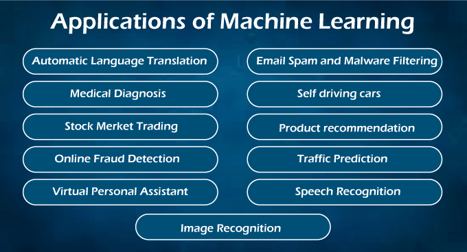

What is Machine Learning

July 23, 2021
Machine Learning
Machine Learning is defined as a technology that uses historical data or past
experience to train machines to do various tasks such as predictions, suggestions, estimations, and so on.
Machine Learning teaches machines to behave like humans by using past experience and projected data to train
them.
Techniques in Machine Learning
Machine Learning techniques are divided mainly into the following 4 categories:
1. Supervised Learning
When a machine has sample data, that is, input and output data with correct labels, supervised learning can be
used. Using some labels and tags, correct labels are utilised to check the model's validity. The supervised
learning technique uses past experience and labelled samples to predict future outcomes. It first analyses the
known training dataset before introducing an inferred function that predicts output values. Furthermore, it
detects faults and corrects them using algorithms during the learning process.
Example: Assume we have a series of photos labelled as "dog". With these dog photos, a machine learning system
is trained to readily detect whether an image is of a dog or not.
2. Unsupervised Learning
Unsupervised learning involves training a system with only a few input samples or labels, with no knowledge of
the result. Because the training data is not classified or labelled, a machine may not always produce proper
results when compared to supervised learning.
Although unsupervised learning is less frequent in business, it aids in data exploration and can draw
inferences from datasets to describe hidden structures in unlabeled data.
Assume a computer has been taught with a set of documents with multiple categories (Type A, B, and C), and we
need to classify them into relevant groups. Because the machine is just given input samples or no output, it
can group these datasets into type A, type B, and type C categories, but it is unimportant whether the
organisation is correct or not.
3. Reinforcement Learning
Reinforcement Learning is a machine learning technique that is based on feedback. In this sort of learning,
agents (computer programmes) must explore their environment, take actions, and receive rewards as feedback
based on their behaviours. They receive a positive reward for each good action and a negative reward for each
bad one. A Reinforcement learning agent's purpose is to maximise positive rewards. Because there is no labelled
data, the agent can only learn by experience.
4. Semi-supervised Learning
Semi-supervised learning is a technique that bridges the gap between supervised and unsupervised learning. It
operates on datasets with minimal labels as well as unlabeled data. It does, however, typically contain
unlabeled data. As a result, it lowers the cost of the machine learning model because labels are expensive, but
for corporate purposes, it may have few labels. It also improves the machine learning model's accuracy and
performance.
Sem-supervised learning assists data scientists in overcoming the limitations of both supervised and
unsupervised learning. Semi-supervised learning has several applications, including speech analysis, online
content categorization, protein sequence classification, text document classifiers, and so on.
Applications of Machine Learning
Machine Learning is widely being used in approximately every sector, including healthcare, marketing,
finance, infrastructure, automation, etc. There are some important real-world examples of machine learning,
which are as follows:

Healthcare and Medical Diagnosis:
Machine Learning is employed in the healthcare industry to assist in the generation of neural networks. These
self-learning neural networks assist doctors in providing quality care by assessing external data about a
patient's status, such as X-rays, CT scans, and numerous tests and screenings. Aside from treatment, machine
learning is useful in areas such as computerised billing, clinical decision assistance, and the establishment
of clinical care recommendations, among others.
Marketing:
Machine learning assists marketers in developing hypotheses, testing, evaluating, and analysing datasets. It
enables us to generate quick forecasts based on the concept of big data. It is particularly useful for stock
marketing because the majority of trading is done by bots and is based on calculations from machine learning
algorithms. Convolutional Neural Network, Recurrent Neural Network, Long-short Term Memory, and other Deep
Learning Neural Networks aid in the development of trading models.
Self-driving cars:
This is one of the most exciting machine learning applications in today's globe. It is critical in the
development of self-driving cars. Various automobile firms, such as Tesla and Tata, are constantly attempting
to produce self-driving automobiles. It is also made possible by the supervised learning machine learning
method, in which a machine is trained to recognise people and objects while driving.
Speech Recognition:
One of the most popular uses of machine learning is speech recognition. Almost every smartphone application now
includes a voice search feature. This "Search By Voice" feature is also related to voice recognition. Speech to
text" or "Computer speech recognition" is the process through which voice commands are transformed into text.
Some well-known speech recognition programmes include Google Assistant, SIRI, Alexa, Cortana, and others.
Traffic Prediction:
Using Google Maps, machine learning can also help us find the shortest route to our location. It also assists
us in estimating traffic conditions, whether they are clear or crowded, thanks to the Google Maps app and
sensor's real-time location.
Image Recognition:
Image identification is another major use of machine learning for identifying objects, people, and places,
among other things. Face detection and auto friend tagging suggestion is the most well-known picture
recognition application utilised by Facebook, Instagram, and others. When we post images of our Facebook pals,
image recognition technology offers their names to us.
Product Recommendations:
Machine Learning is commonly utilised in business industries for product marketing. Almost all large and small
businesses, like Amazon, Alibaba, Walmart, and Netflix, employ machine learning algorithms to recommend
products to their customers. Whenever we look for a product on their websites, we are bombarded with adverts
for similar things. This is also possible using Machine Learning algorithms, which learn about users'
preferences and recommend things to them based on historical data.
Automatic Translation:
Automatic language translation is another important application of machine learning, which is based on sequence
algorithms and involves translating text from one language into other desirable languages. This feature, known
as Neural Machine Learning, is provided by Google GNMT (Google Neural Machine Translation). You can also use
Google Lens to translate selected text on photos as well as entire documents.
Virtual Assistant:
A virtual personal assistant is another prominent machine learning application. It first records the speech and
transfers it to a cloud-based server, where it is decoded using machine learning techniques. All major
corporations, such as Amazon and Google, use these features to play music, call someone, open an app, and
search for data on the internet, among other things.
Email Spam and Malware Filtering:
Machine Learning also assists us in categorising emails that arrive in our inbox, such as important, regular,
and spam. ML algorithms such as Multi-Layer Perceptron, Decision Tree, and Nave Bayes classifier make this
possible.